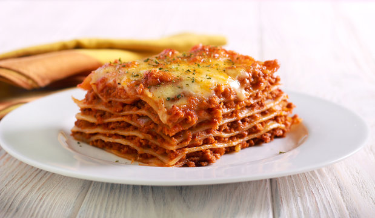

Lasagna

Description
Lasagna is a beloved Italian classic, featuring layers of tender pasta, rich meat sauce, creamy cheese, and a golden, bubbling top. Each bite offers a perfect blend of savory flavors and satisfying textures, making it a comforting dish for family gatherings or special occassions.
This hearty casserole is baked to perfection, with a fragrant tomato and beef sauce nestled betweem sheets of pasta and topped with a generous layer of melted cheese. It's a timeless favorite that brings warmth and joy to any table.
Ingredients
- Lasagna noodles
- Ground beef
- Onion, chopped
- Garlic, minced
- Tomato sauce
- Tomato paste
- Diced tomatoes
- Olive oil
- Salt and pepper
- Italian seasoning
- Ricotta cheese
- Mozzarella cheese, shredded
- Parmesan cheese, grated
- Fresh basil (optional)
Steps
- Preheat the oven to 375°F (190°C).
- Cook the lasagna noodles according to package instructions; drain and set aside.
- In a large skillet, heat olive oil over medium heat. Add chopped onion and garlic, sauté until translucent.
- Add ground beef and cook until browned. Drain excess fat.
- Stir in tomato sauce, tomato paste, diced tomatoes, salt, pepper, and Italian seasoning. Simmer for 15-20 minutes.
- In a baking dish, spread a thin layer of meat sauce. Layer noodles over the sauce.
- Spread ricotta cheese over noodles, then add a layer of meat sauce, and sprinkle with mozzarella and Parmesan. Repeat layers, finishing with cheese on top.
- Cover with foil and bake for 25 minutes. Remove foil and bake for another 25 minutes until cheese is bubbly and golden.
- Let the lasagna rest for 10-15 minutes before serving. Garnish with fresh basil if desired.
Home
Cobb Salad
Savory Palmiers